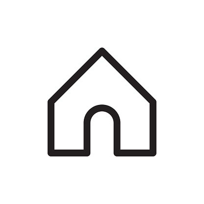
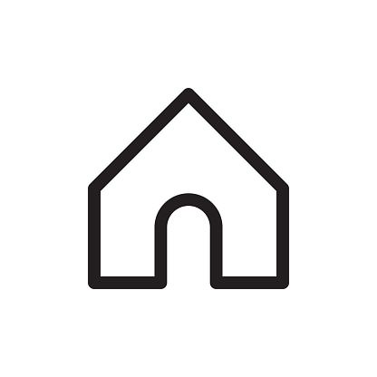

The row exercise helps to develop the major back muscles, which can change the appearance of your upper body and also help to improve how you move in your day to day and when playing sports. There are many variations of rows you can perform in the gym. Find out the different variations below, and give these a try on your next back day. The row consists of a horizontal pull movement, meaning you'll be pulling the weight in towards you. This is the main movement of the exercise, no matter which row variation you are trying. For every horizontal push movement you perform (for example press ups), it's recommended to perform two horizontal pull movements, to avoid overworking your chest, that could lead to curving of the spine (rounded back), and in turn compromise your posture. When thinking about training the back, it's important to think about creating a well-rounded routine.